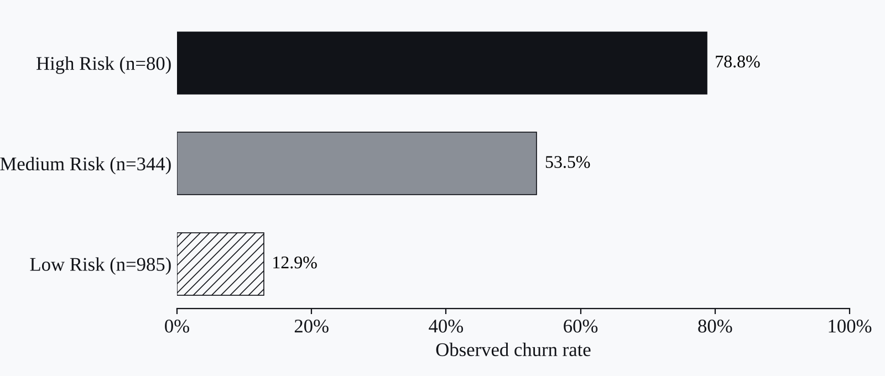
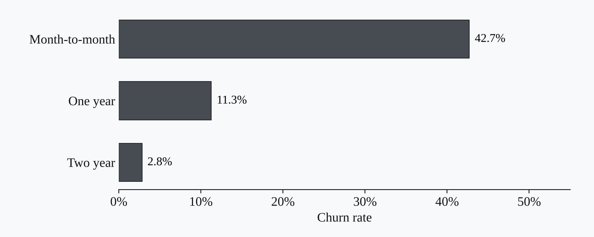
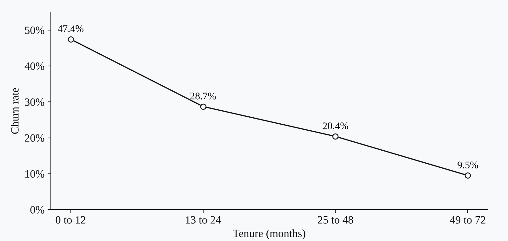
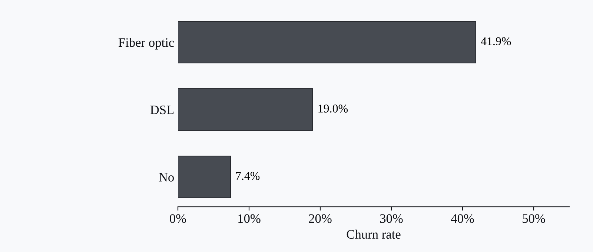
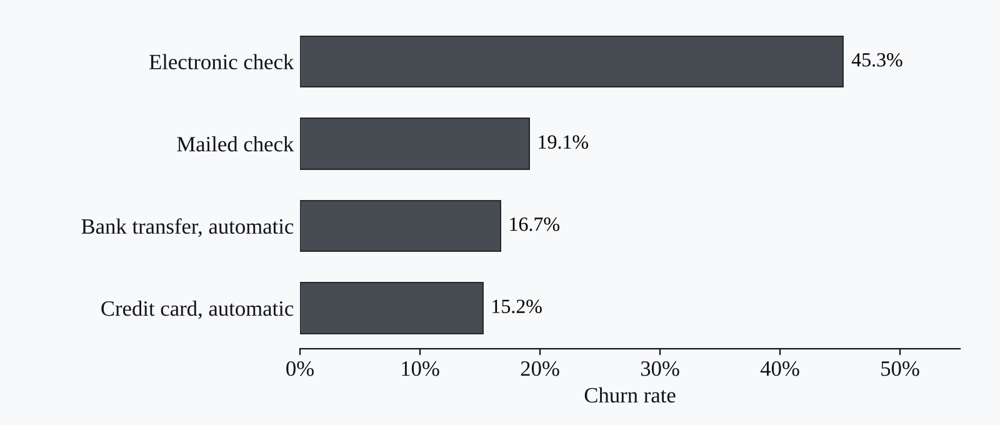
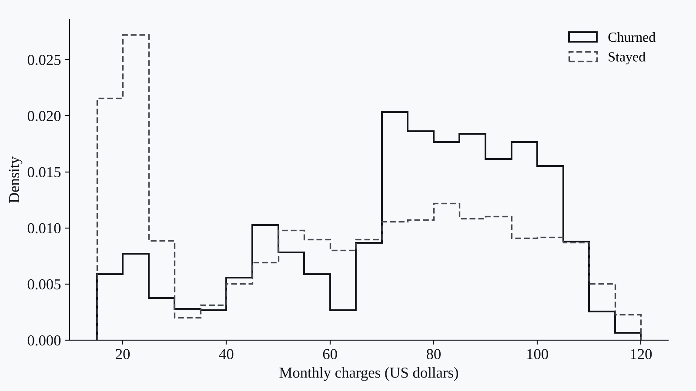

Projects · Machine learning · Explainability · Churn risk
AI Customer Churn Intelligence System
An explainable churn-prediction workflow using machine learning, SHAP, and retention-focused reporting.

Context
I wanted to build a churn-prediction workflow that was not only accurate, but also explainable.
Data
The Telco customer churn dataset: 7,043 customers with account, contract, service, and billing attributes and a 26.5% observed churn rate.
Method
I applied machine-learning classification models, SHAP explainability, and Power BI reporting.
Output
Churn-risk scores, explainability visuals, and retention-focused dashboards.
Findings
Among the 1,409 customers the model scored, those in the High Risk segment churned at 78.8%, against 12.9% in the Low Risk segment. Contract type, pricing, and service usage were the strongest drivers, and $27,972 in revenue was flagged as at risk.
Reflection
Next, I’d like to deploy this as an interactive web app with stronger model tuning.
Figures




